- Разложение многочлена на множители
- Квадратное уравнение
- Квадратное уравнение с чётным вторым коэффициентом
- Теорема Виета
- Как разложить квадратный трёхчлен на множители
- Как это работает
- Примеры разложений
- Когда корень только один
- Задания для самостоятельного решения
Как разложить на множители квадратный трёхчлен
Квадратный трёхчлен — это многочлен вида ax2 + bx + c.
В прошлых уроках мы решали квадратные уравнения. Общий вид таких уравнений выглядел так:
ax2 + bx + c = 0
Левая часть этого уравнения является квадратным трёхчленом.
Одним из полезных преобразований при решении задач является разложение квадратного трёхчлена на множители. Для этого исходный квадратный трёхчлен приравнивают к нулю и решают квадратное уравнение. В этом случае говорят, что выполняется поиск корней квадратного трёхчлена.
Полученные корни x1 и x2 следует подстáвить в следующее выражение, которое и станет разложением:
a(x − x1)(x − x2)
Таким образом, чтобы разложить квадратный трёхчлен на множители при помощи решения квадратного уравнения, нужно воспользоваться следующей готовой формулой:
ax2 + bx + c = a(x − x1)(x − x2)
Где левая часть — исходный квадратный трёхчлен.
Пример 1. Разложить на множители следующий квадратный трёхчлен:
x2 − 8x + 12
Найдём корни квадратного трёхчлена. Для этого приравняем данный квадратный трёхчлен к нулю и решим квадратное уравнение:
x2 − 8x + 12 = 0
В данном случае коэффициент b является чётным. Поэтому можно воспользоваться формулами для чётного второго коэффициента. Чтобы сэкономить время, некоторые подробные вычисления можно пропустить:
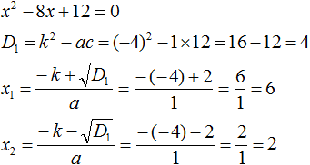
Итак, x1 = 6, x2 = 2. Теперь воспользуемся формулой:
ax2 + bx + c = a(x − x1)(x − x2)
В левой части вместо выражения ax2 + bx + c напишем свой квадратный трёхчлен x2 − 8x + 12. А в правой части подставим имеющиеся у нас значения. В данном случае a = 1, x1 = 6, x2 = 2
x2 − 8x + 12 = 1(x − 6)(x − 2) = (x − 6)(x − 2)
Если a равно единице (как в данном примере), то решение можно записать покороче:
x2 − 8x + 12 = (x − 6)(x − 2)
Чтобы проверить правильно ли разложен квадратный трёхчлен на множители, нужно раскрыть скобки у правой части получившегося равенства.
Раскроем скобки у правой части равенства, то есть в выражении (x − 6)(x − 2). Если мы всё сделали правильно, то должен получиться квадратный трёхчлен x2 − 8x + 12
(x − 6)(x − 2) = x2 − 6x − 2x + 12 = x2 − 8x + 12
Пример 2. Разложить на множители следующий квадратный трёхчлен:
2x2 − 14x + 24
Приравняем данный квадратный трёхчлен к нулю и решим уравнение:
2x2 − 14x + 24 = 0
Как и в прошлом примере коэффициент b является чётным. Поэтому можно воспользоваться формулами для чётного второго коэффициента:
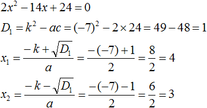
Итак, x1 = 4, x2 = 3. Приравняем квадратный трехчлен 2x2 − 14x + 24 к выражению a(x − x1)(x − x2), где вместо переменных a, x1 и x2 подстáвим соответствующие значения. В данном случае a = 2
2x2 − 14x + 24 = 2(x − 4)(x − 3)
Выполним проверку. Для этого раскроем скобки у правой части получившегося равенства. Если мы всё сделали правильно, то должен получиться квадратный трёхчлен 2x2 − 14x + 24
2(x − 4)(x − 3) = 2(x2 − 4x −3x + 12) = 2(x2 − 7x + 12) = 2x2 − 14x + 24
Как это работает
Разложение квадратного трёхчлена на множители происходит, если вместо коэффициентов квадратного трёхчлена подстáвить теорему Виета и выполнить тождественные преобразования.
Для начала рассмотрим случай, когда коэффициент a квадратного трёхчлена равен единице:
x2 + bx + c
Вспоминаем, что если квадратное уравнение является приведённым, то теорема Виета имеет вид:
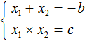
Тогда приведённый квадратный трехчлен x2 + bx + c можно разложить на множители следующим образом. Сначала выразим b из уравнения x1 + x2 = −b. Для этого можно умножить обе его части на −1
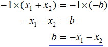
Переменную c из теоремы Виета выражать не нужно — она уже выражена. Достаточно поменять местами левую и правую часть:
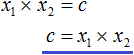
Теперь подставим выраженные переменные b и c в квадратный трёхчлен x2 + bx + c
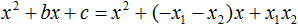
Раскроем скобки там где это можно:
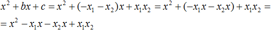
В получившемся выражении выполним разложение многочлена на множители способом группировки. В данном случае удобно сгруппировать первый член со вторым, а третий с четвёртым:
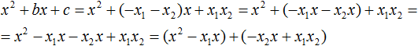
Из первых скобок вынесем общий множитель x, из вторых скобок — общий множитель −x2
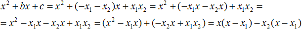
Далее замечаем, что выражение (x − x1) является общим множителем. Вынесем его за скобки:
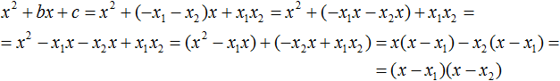
Мы пришли к тому, что выражение x2 + bx + c стало равно (x − x1)(x − x2)
x2 + bx + c = (x − x1)(x − x2)
Но это был случай, когда исходный квадратный трёхчлен является приведённым. В нём коэффициент a равен единице. И соответственно, в формуле разложения такого квадратного трехчлена коэффициент a можно опустить.
Теперь рассмотрим случай, когда коэффициент a квадратного трёхчлена не равен единице. Это как раз тот случай, когда в формуле разложения присутствует перед скобками коэффициент a
ax2 + bx + c = a(x − x1)(x − x2)
Вспоминаем, что если квадратное уравнение не является приведённым, то есть имеет вид ax2 + bx + c = 0, то теорема Виета принимает следующий вид:
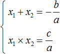
Это потому что теорема Виета работает только для приведённых квадратных уравнений. А чтобы уравнение ax2 + bx + c = 0 стало приведённым, нужно разделить обе его части на a
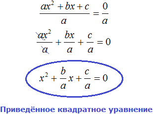
Далее чтобы квадратный трёхчлен вида ax2 + bx + c разложить на множители, нужно вместо b и c подставить соответствующие выражения из теоремы Виета. Но в этот раз нам следует использовать равенства
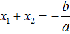
и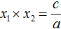
Для начала выразим b и c. В первом равенстве умножим обе части на a. Затем обе части получившегося равенства умножим на −1
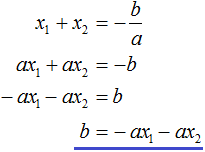
Теперь из второго равенства выразим c. Для этого умножим обе его части на a
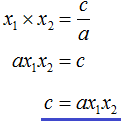
Теперь подставим выраженные переменные b и с в квадратный трёхчлен ax2 + bx + c. Для наглядности каждое преобразование будем выполнять на новой строчке:
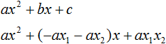
Здесь вместо переменных b и c были подставлены выражения −ax1 − ax2 и ax1x2, которые мы ранее выразили из теоремы Виета. Теперь раскроем скобки там где это можно:
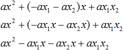
В получившемся выражении выполним разложение многочлена на множители способом группировки. В данном случае удобно сгруппировать первый член со вторым, а третий с четвёртым:
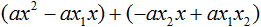
Теперь из первых скобок вынесем общий множитель ax, а из вторых — общий множитель −ax2
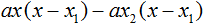
Далее замечаем, что выражение x − x1 тоже является общим множителем. Вынесем его за скобки:
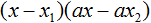
Вторые скобки содержат общий множитель a. Вынесем его за скобки. Его можно расположить в самом начале выражения:
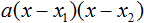
Мы пришли к тому, что выражение ax2 + bx + c стало равно a(x − x1)(x − x2)
ax2 + bx + c = a(x − x1)(x − x2)
Отметим, что если квадратный трехчлен не имеет корней, то его нельзя разложить на множители. Действительно, если не найдены корни квадратного трёхчлена, то нéчего будет подставлять в выражение a(x − x1)(x − x2) вместо переменных x1 и x2.
Примеры разложений
Пример 1. Разложить на множители следующий квадратный трёхчлен:
3x2 − 2x − 1
Найдём корни квадратного трёхчлена:
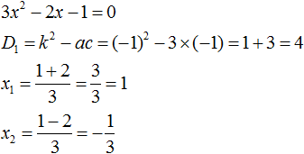
Воспользуемся формулой разложения. В левой части напишем квадратный трёхчлен 3x2 − 2x − 1, а в правой части — его разложение в виде a(x − x1)(x − x2), где вместо a, x1 и x2 подстáвим соответствующие значения:
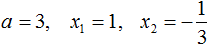
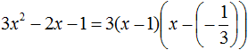
Во вторых скобках можно заменить вычитание сложением:
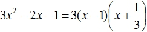
Пример 2. Разложить на множители следующий квадратный трёхчлен:
3 − 11x + 6x2
Упорядочим члены так, чтобы старший коэффициент располагался первым, средний — вторым, свободный член — третьим:
6x2 − 11x + 3
Найдём корни квадратного трёхчлена:
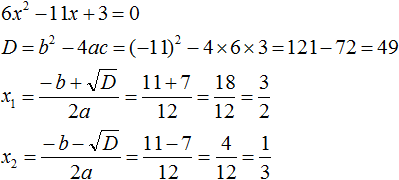
Воспользуемся формулой разложения:
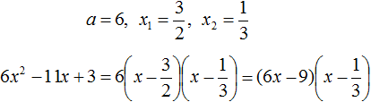
Упростим получившееся разложение. Вынесем за первые скобки общий множитель 3
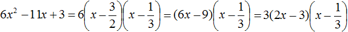
Теперь воспользуемся сочетательным законом умножения. Напомним, что он позволяет перемножать сомножители в любом порядке. Умножим 3 на вторые скобки. Это позвóлит избавиться от дроби в этих скобках:
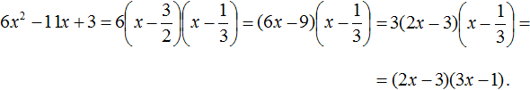
Пример 3. Разложить на множители следующий квадратный трёхчлен:
3x2 + 7x − 6
Найдём корни квадратного трёхчлена:
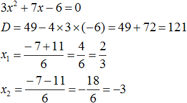
Воспользуемся формулой разложения:
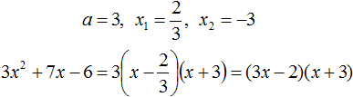
Пример 4. Найдите значение k, при котором разложение на множители трёхчлена 3x2 − 8x + k содержит множитель (x − 2)
Если разложение содержит множитель (x − 2), то один из корней квадратного трёхчлена равен 2. Пусть корень 2 это значение переменной x1
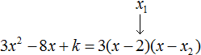
Чтобы найти значение k, нужно знать чему равен второй корень. Для его определения воспользуемся теоремой Виета.
В данном случае квадратный трёхчлен не является приведённым, поэтому сумма его корней будет равна дроби
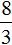
, а произведение корней — дроби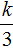
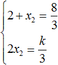
Выразим из первого равенства переменную x2 и сразу подстáвим найденное значение во второе равенство вместо x2
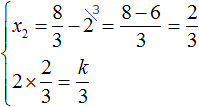
Теперь из второго равенства выразим k. Так мы найдём его значение.
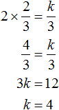
Пример 5. Разложить на множители следующий квадратный трёхчлен:
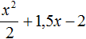
Перепишем данный трёхчлен в удобный для нас вид. Если в первом члене заменить деление умножением, то получим
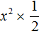
. Если поменять местами сомножители, то получится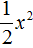
. То есть коэффициент a станет равным \(\frac{1}{2}\)Коэффициент b можно перевести в обыкновенную дробь. Так проще будет искать дискриминант:
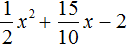
Найдём корни квадратного трёхчлена:
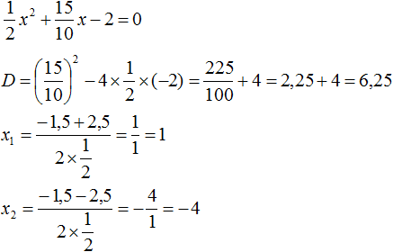
Воспользуемся формулой разложения:
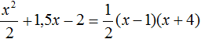
Когда корень только один
Если квадратный трёхчлен имеет только один корень, то формула разложения квадратного трёхчлена примет такой вид:
ax2 + bx + c = a(x − x1)2
Вместо x1 подставляется единственный найденный корень квадратного трёхчлена.
Например, квадратный трёхчлен x2 − 6x + 9 имеет только один корень. Дискриминант этого квадратного трёхчлена равен нулю:
D = b2 − 4ac = (−6)2 − 4 × 1 × 9 = 36 − 36 = 0
и далее вычисляется единственный корень по известной формуле:
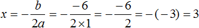
Тогда по формуле, которая приведена выше, получим:
ax2 + bx + c = a(x − x1)2
x2 − 6x + 9 = (x − 3)2
Внимательные наверное сразу поняли почему происходит именно так. Если дискриминант квадратного трёхчлена равен нулю, то корень вычисляется по формуле:
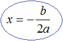
Но никто не запрещает нам использовать формулы вычисления корней квадратного трёхчлена:


Просто в этом случае мы получим один и тот же корень 3
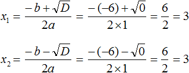
Видим, что x1 = x2. Теперь для квадратного трёхчлена x2 − 6x + 9 применим нашу формулу разложения, которую мы применяем когда два корня:
x2 − 6x + 9 = (x − 3)(x − 3)
Выражение (x − 3)(x − 3) это перемножение двух сомножителей, каждый из которых равен (x − 3). Это выражение можно заменить на выражение (x − 3)2
x2 − 6x + 9 = (x − 3)2
Задания для самостоятельного решения
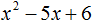
Показать решение
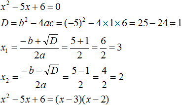
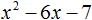
Показать решение
Показать решение
Показать решение
Показать решение
Показать решение
Показать решение
Показать решение
Показать решение
Показать решение
Показать решение
Показать решение
Понравился урок?
Вступай в нашу новую группу Вконтакте и начни получать уведомления о новых уроках